Florence Road
Live at
Bowery Ballroom
Overview
Song Wish Upon You
The song opens with a piano intro, then the cymbals come in.
Four cameras, four jobs: one on the singer, one on the room, one in the crowd, and one for texture.
Together they give the edit a safety wide, close ups, audience energy, and a lo-fi texture layer.
We'll capture scratch audio on every camera and record audience sound for the whole show, so the edit has the room cheering and singing along.
The rule for every operator: know your lane. If two cameras are getting the same shot, one of them is wasted.
Camera map
| Cam | Name | Position | Rig | Primary shot | Priority |
|---|---|---|---|---|---|
| A | Stage Close | On stage, downstage corner | Handheld, shoulder rig or top handle | Lead singer MCU to ECU | Hero angle |
| B | Room Wide | Front of house, center, elevated | Tripod, fluid head, long zoom | Full stage wide, slow push ins | Safety angle, never stops rolling |
| C | Crowd | Moves through the audience | Handheld, wide prime | Over the shoulder stage views, fan reactions | Energy angle |
| D | VHS | Crowd, roaming | Consumer VHS or VHS-C camcorder | Crash zooms, lo-fi texture | Accent layer |
| E | GoPro POV (optional) | Mic stand or guitar neck | GoPro, clamp mount, unmanned | Singer at the mic, or player from the guitar neck | Bonus angle |
Room map
Bowery Ballroom · main floor + mezzanineNo barrier at the front. The crowd runs right up to the stage with no barricade or photo pit, so C and D will need to elbow through the crowd to reach the front. Get into position before the set starts.
The cameras
Stage Close
On stage · Handheld · Lead singerOperator Jack Cohen
Cam A covers the lead singer. It is the only camera on stage and stays close and at eye level.
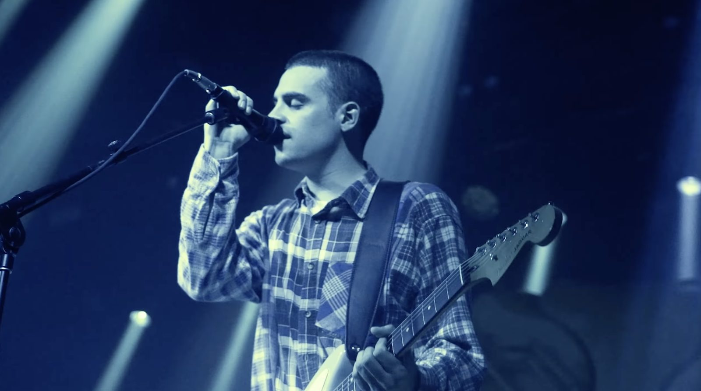
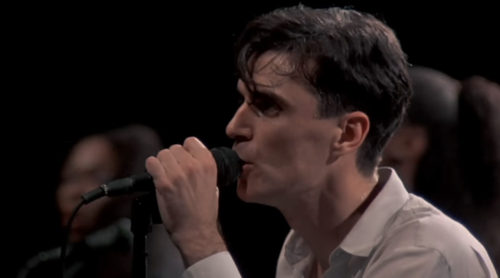
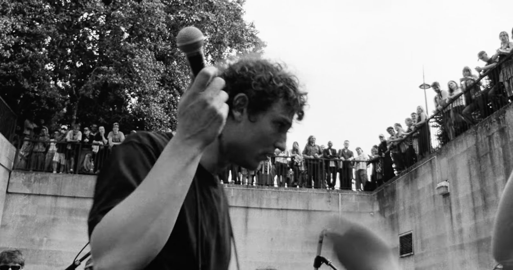
- Position
- Downstage left or right corner, cleared with the artist and stage manager in advance. Stay out of the singer's walking lanes and off the monitor wedges.
- Framing
- MCU to ECU. Shoot low and look up so the lights flare behind the head. Work the mic, hands, eyes, sweat.
- Lens
- Fast wide to normal prime (24mm to 50mm) or a short zoom. Get physically closer instead of zooming.
- Rig
- Handheld only, no gimbal or tripod. Shoulder rig or top handle so the operator can move with the singer.
- Movement
- Slow drift and push ins during verses, looser and more reactive on choruses and drops. Keep the singer's face in focus.
- Big moments
- When the singer turns to the crowd, swing behind them for the reverse, singer in the foreground and the audience beyond (third reference).
- Settings
- 1/50 shutter at 24fps, native high ISO, log profile. Ride exposure off the face, not the lights.
Room Wide
Front of house · Tripod · ZoomsOperator Patrick Linehan
Cam B is the safety wide. It rolls from the first note to the last.
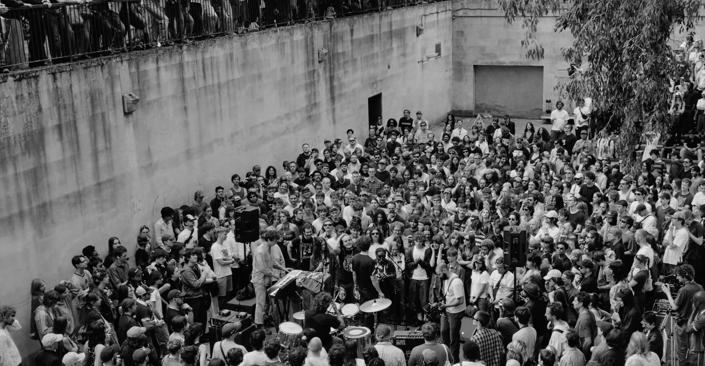
- Position
- Front of house, centered, as high as possible (balcony, riser, FOH platform).
- Framing
- Full stage plus some crowd as the home frame, with slow zooms into the band and back out.
- Lens
- Long cine or broadcast style zoom (roughly 24mm to 200mm or longer depending on throw).
- Rig
- Tripod with fluid head. Sandbag it and tape down cables.
- Rules
- Never stop recording. Keep zooms slow and on the music, and return to the wide often so the editor always has a cutaway.
- Bonus
- In quiet moments, look for silhouettes, phone lights, and rim lit heads in the foreground.
Crowd
Floor · Handheld · ReactionsOperator Jake Z
Cam C covers the audience: faces singing along, hands up, the view from the front.
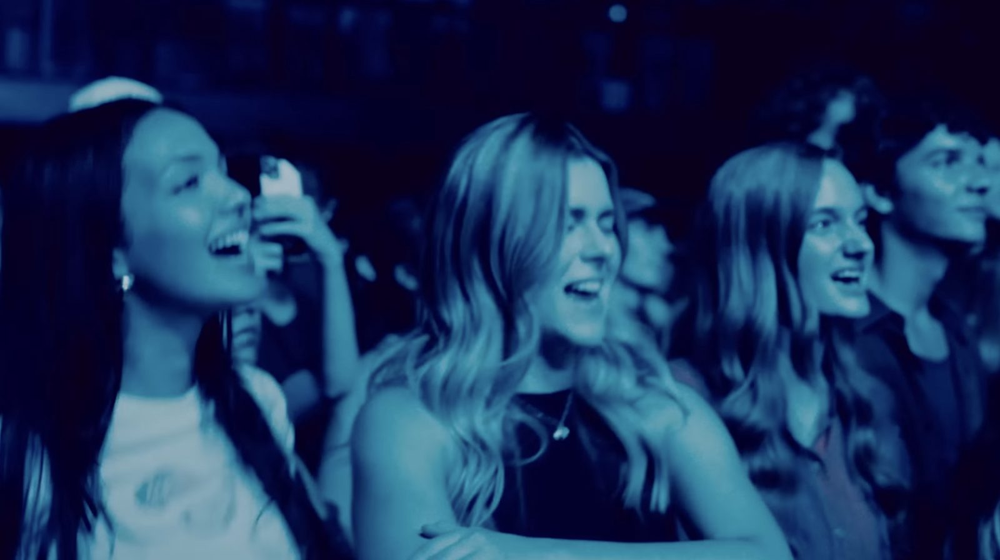
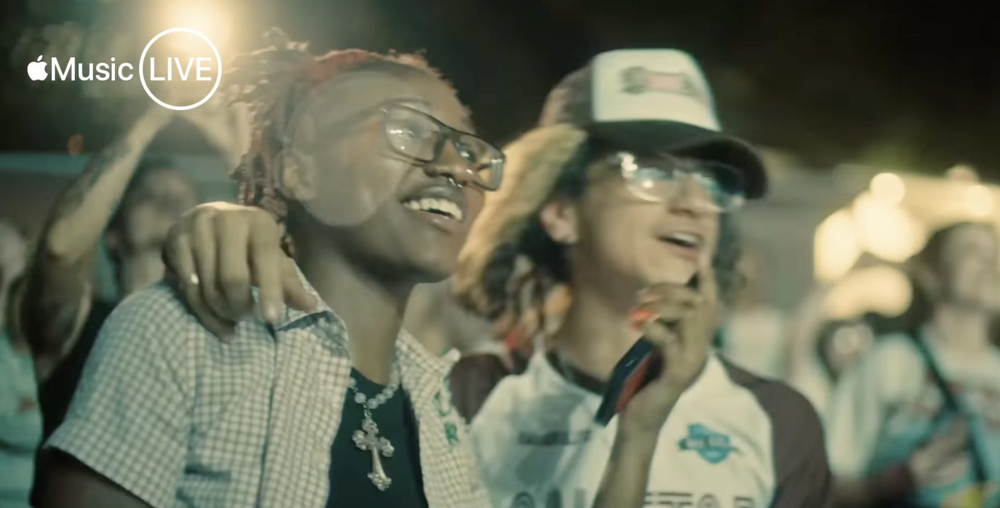
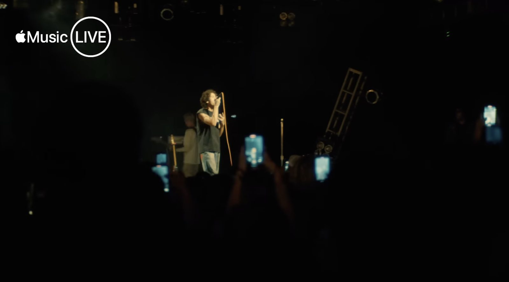
- Position
- Roaming the floor, from the lip of the stage to mid room. Work the edges first, then push to the front for the big moments.
- No barrier
- No barricade or photo pit. The crowd runs right up to the stage, so floor operators will need to elbow through. Get into position before the set and keep the rig tight to your body.
- Framing
- Two kinds of shots. Reactions: tight on faces singing, eyes on the stage, lit by stage spill. Point of view: over shoulders and between heads toward the stage.
- Lens
- Wide prime (16mm to 35mm). Wide keeps shake tolerable and lets you stay close.
- Rig
- Small body, handheld with a top handle or cage. No gimbal in a packed crowd.
- Etiquette
- Keep the camera low when moving and don't block fans for long. Ask before holding on someone's face, and carry release cards.
- Cue
- On the biggest chorus, find the loudest singers and hold on them.
VHS Accent
Crowd · Camcorder · Crash zoomsOperator Micah Bierman
Cam D is texture, not coverage: soft focus, blooming highlights, color bleed and crash zooms to cut against the clean digital angles.
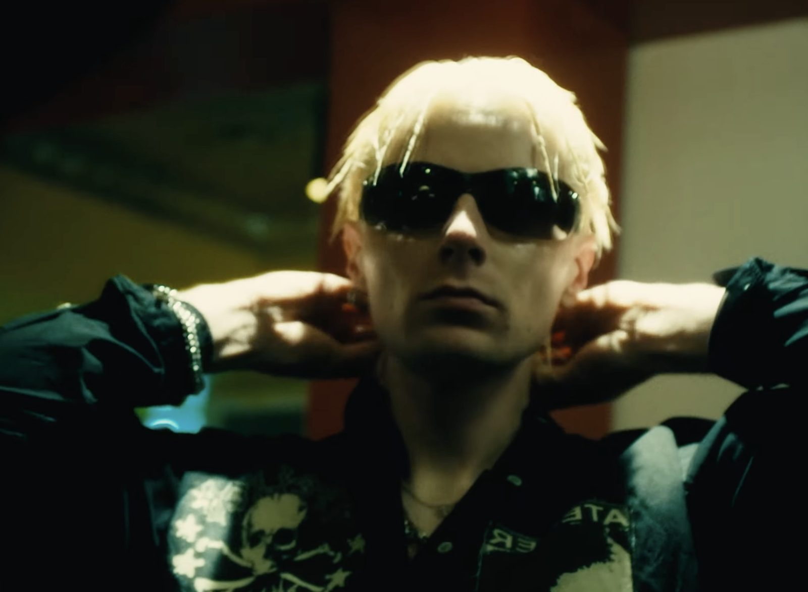
- Position
- In the crowd, roaming. It can drift to the side of the stage or backstage.
- Camera
- Consumer VHS or VHS-C camcorder (Panasonic, JVC, Sony Handycam era) with fresh tapes and spare batteries. Turn off the date stamp unless it is wanted.
- Framing
- Crash zooms in and out, quick whip pans, harsh on camera light moments, performers and fans both. Lean into the mistakes.
- Light
- These cameras struggle in the dark. Point toward stage wash, use the built in light up close, and let highlights bloom.
- Capture
- Record to tape, then digitize after the show through a capture card, or run the camcorder's AV out into a small digital recorder (Atomos or similar) for a backup file on the night.
- Sync
- VHS drifts. Plan to sync by eye to a visible hit (clap, drum hit) per clip, not by timecode.
GoPro POV
Optional · Mic or guitar neck mountUnmanned
Cam E is an unmanned GoPro on the performer's gear, for angles no operator can get: inches from the singer's mouth, or up the guitar neck at the player.
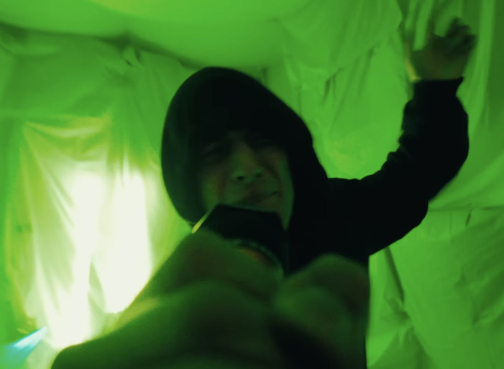
- Mic mount
- Clamp to the mic stand just below the clip, aimed back at the singer's face. Keep it off the grille and out of the singer's sightline.
- Guitar neck
- Clamp to the headstock, lens facing back down the neck toward the player. Fretting hand in the foreground, face and lights beyond.
- Clear it first
- Both mounts need the artist's OK and a test at soundcheck. Confirm the guitar mount doesn't throw off tuning or balance and the mic mount doesn't rattle into the vocal.
- Settings
- Widest FOV with lens distortion correction off for the look, 4K at 24fps to match, stabilization on, protune flat. Lock exposure so stage flashes don't pump it.
- Power and media
- Fresh battery and card per set, or a small USB power bank taped to the stand. Start recording before walk on, since no one can reach it once the show starts.
- Sync
- No timecode. Sync by scratch audio waveform in the edit.
- In the edit
- Short bursts on big moments like the first chorus, a solo, or the final song.
B-Roll
Getting ready · Doors · The roomShot on A, C and D
B-roll covers the night around the show: the build up, the people, and the place.
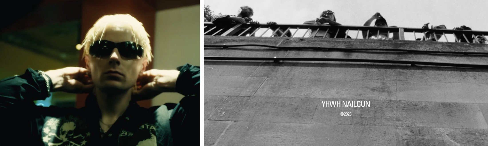
Getting ready · backstage, Jack on A, VHS on D
- Hair, wardrobe, sunglasses on, mirror moments, pacing, warm ups, the last look before walking on
- Tight details: hands, rings, setlist taped to the floor, in ears going in, guitars being tuned
- Keep it observational. Don't stage anything unless the artist is up for it.
Crowd arriving · outside and doors, Jake on C, VHS on D
- The line down the block, tickets and wristbands, merch table, first people crowding the front of the stage
- Friends taking photos, singing along to the pre show playlist, phones up for the opener
- One wide of the room filling up, shot from the same spot at doors and again right before the set
The room and the city
- Marquee, venue exterior, street at dusk, empty stage with work lights, gear on the stage before doors
- Lights and haze being tested, sound check moments, crew at work
Shoot B-roll in short, clean clips of 5 to 10 seconds. Match the show look on A and C, and let D be as messy as it wants.
The team
Room · Stage · CrowdPast work
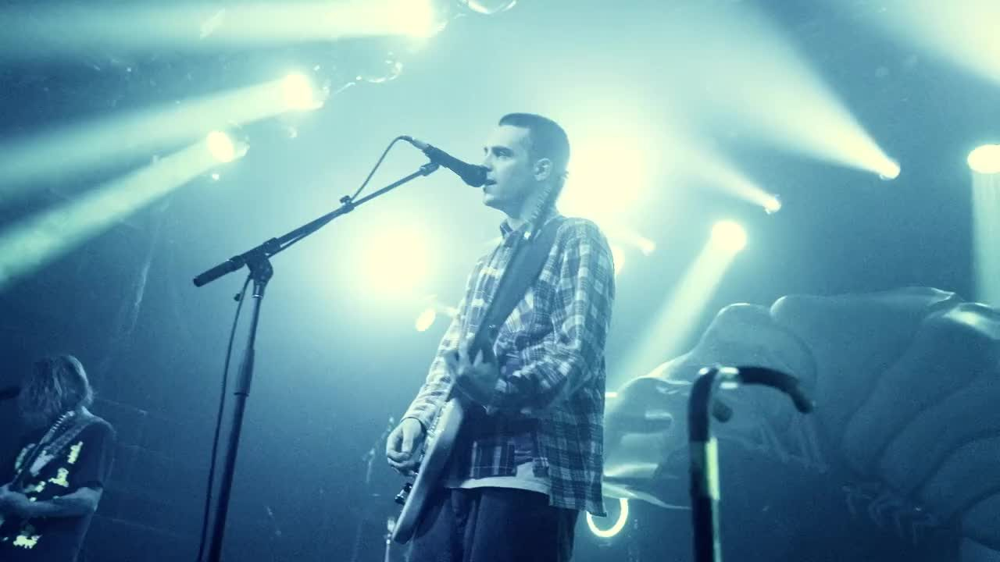
Royel Otis · 2024
If Our Love Is Dead (Live)
Dir. P. Linehan + J. Kerr · Edit P. Linehan · Color N. Consing
Brooklyn Steel on the Glory To Glory tour. Shot from the stage in a blue and green wash, close on the guitars and the kit, ending on the room with everyone's hands up. The Cam A reference frames come from this film.
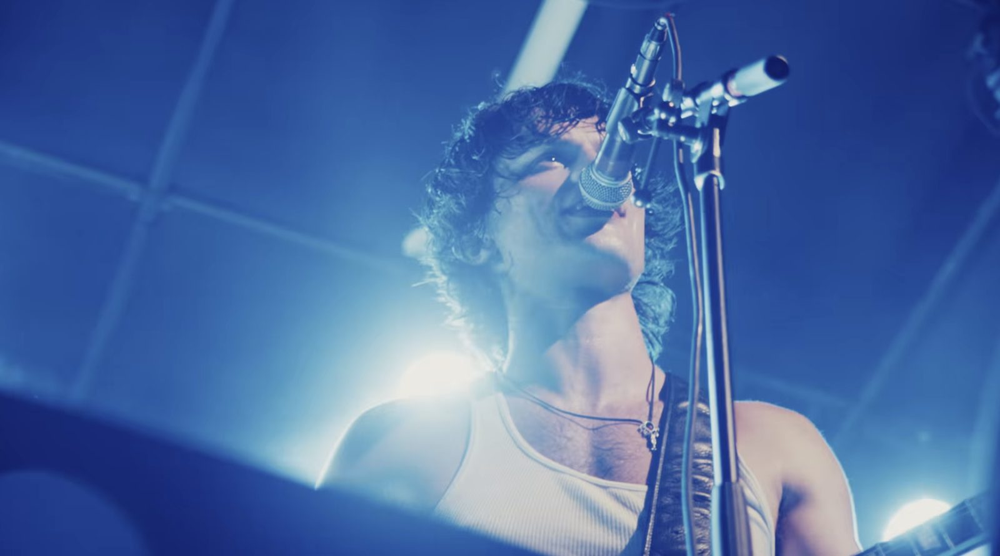